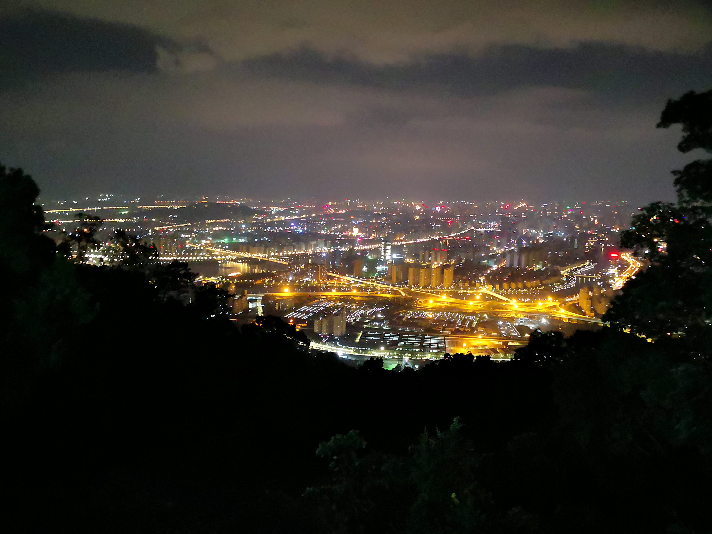
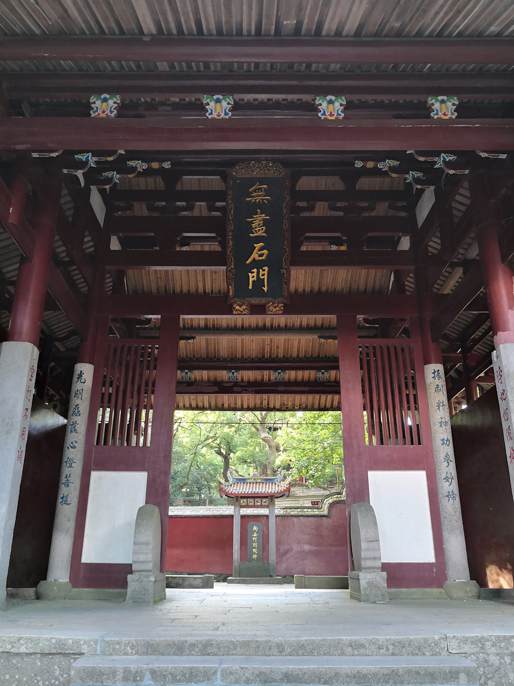
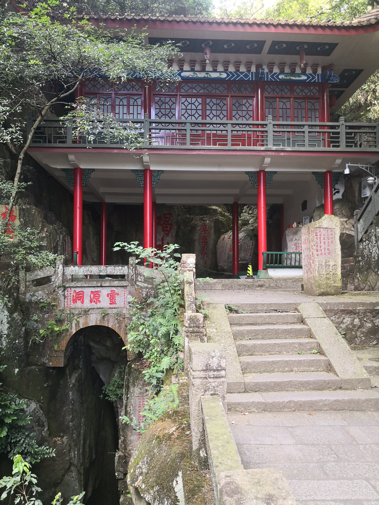
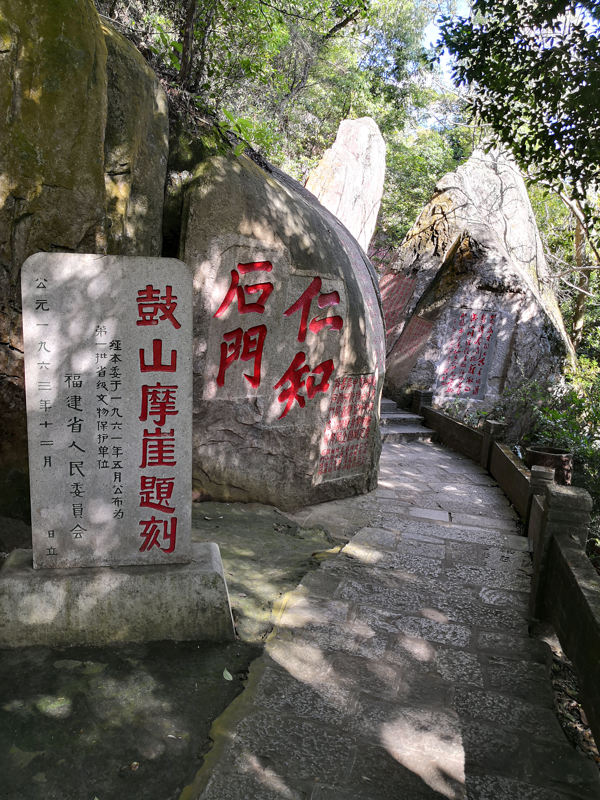
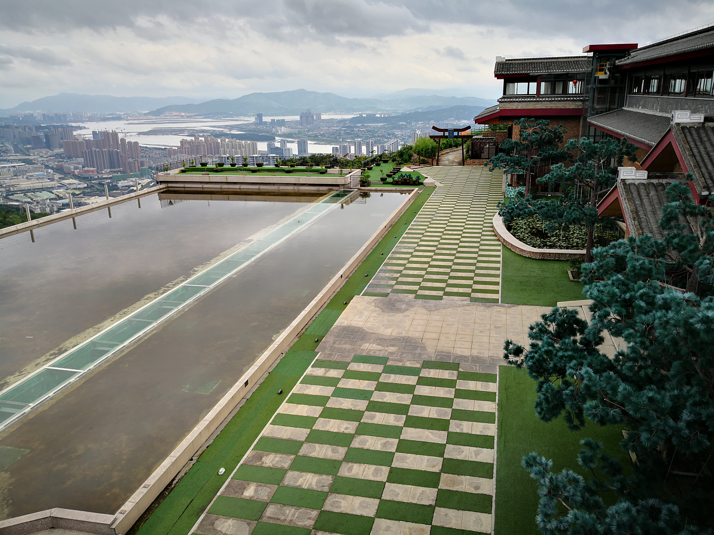
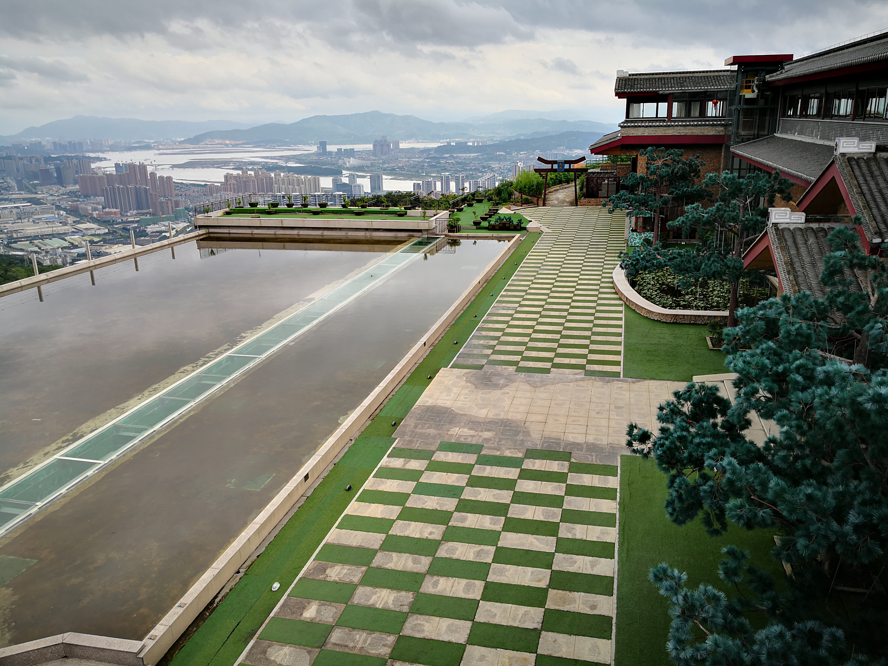

鼓山位于福建省福州市晋安区东部、闽江北岸，距离市中心区约8公里，是福州最著名的风景区之一。
鼓山是国家AAAA级旅游景区，也是国家级风景名胜区。2002年5月，福建省鼓山风景名胜区经国务院批准列入第四批国家级风景名胜区名单。
鼓山景区以古刹涌泉寺为中心，东有回龙阁、灵源洞等20多景；西有洞壑数十景，其中以十八景尤著；南有罗汉台、香炉峰等50多景；北有大顶峰、白云洞等45景。这些景点主要由花岗岩经长期剥蚀、风化、崩塌、堆积而成，千姿百态，构成蟠桃林、刘海钓蟾、玉笋峰、八仙岩和喝水岩等自然景观。此外，还有历代摩崖石刻多处。
站在姚望台上，可以俯瞰整个福州城，原本抬头望不到顶的高楼大厦，突然像积木的小房子一样可爱，马路上的车辆来来往往，如同蚂蚁搬运粮食般走走停停。
夜幕降临，福州的美丽才刚刚呈现出来，满城灯火通明，星光璀璨，福州最高的那些楼也亮出自身标志性的灯光遍及建筑的全身，有的是一枝独秀，有的则是百花争艳。
涌泉寺
涌泉寺位于鼓山之上，占地约1.7公顷，仍保持着明清的建筑风格。寺依山偎谷，槛廊连缀，25座大小殿堂簇拥着大雄宝殿。大雄宝殿巨柱耸立，飞檐凌空，雄伟辉煌。殿内释迎牟尼三世佛不着梵服，只披汉装，端坐其中；两旁十八罗汉神态各异，“法相庄严”。在大殿后侧，有尊重约1.15吨的“三圣像”。像前有一张桑丝木制成的长桌，据说历经多次火劫，至今仍完好如初，被称为镇寺之宝。大殿内外有许多橡联佳句，如：“座上白云多，正丹风浴时，苍龙卧后；眼中沧海小，看七鲲东去，五虎南来。”等，皆为古寺历史和环境的生动写照。
 石鼓书香
 

友情链接：百度百科